Die Wortmarke.
Aus der Schrift gebaut, nicht nachgezeichnet: Figtree auf Gewicht 800 festgeschrieben, die Buchstaben als eine Form, der Punkt als echter Kreis. Die ganze Datei ist 917 Bytes gross.
Vier Fassungen
Schwarz — der Normalfall auf hellen Flächen.
Akzentpunkt auf hell — wenn die Marke Farbe tragen soll.

Weiss — auf dunklen Flächen und über Bildern.
Akzentpunkt auf dunkel.
Vom Plakat bis zur Visitenkarte
Dieselbe Datei, keine zweite Fassung nötig. Unter 60 px schliesst der Punkt optisch an das T an — darunter bitte nicht verwenden.
Schutzraum
Rundherum bleibt mindestens der Durchmesser des Punkts frei. Kein Text, keine Kante, kein zweites Logo innerhalb dieser Zone.
Die Masse
| Schrift | Figtree, Gewicht 800 |
|---|---|
| Laufweite | −0,045 em |
| Versalhöhe | 700 Einheiten (0,700 em) |
| Punkt-Durchmesser | 300 Einheiten = 0,43 × Versalhöhe |
| Abstand T → Punkt | 0,10 em |
| Seitenverhältnis | 5119 : 700 (7,31 : 1) |
| Akzentfarbe | #F5A524 |
| Schwarz | #0E0D0B |
| Weiss | #F7F7F5 |
Dateien
{kind=link}
{kind=link}
{kind=link}
{kind=link}
{kind=link}
{kind=link}
{kind=link}
Was noch fehlt
- Eine quadratische Fassung. Für Favicon, Instagram-Profil und App-Symbol braucht es ein Zeichen, das im Quadrat funktioniert — die Wortmarke ist 7:1 breit und wird dort zum Strich. Vorschlag: ein „K" mit dem Punkt.
- Die Akzentfarbe hängt an der Fassung. Hier steht Bernstein #F5A524. Fällt die Entscheidung auf die violette Fassung, wird der Punkt #6A00F4 — die Dateien sind in einer Minute neu erzeugt.
- EPS, falls eine ältere Druckerei kein PDF annimmt. Selten nötig.